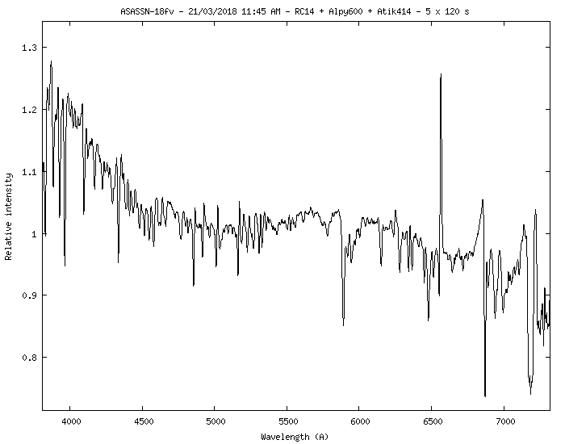
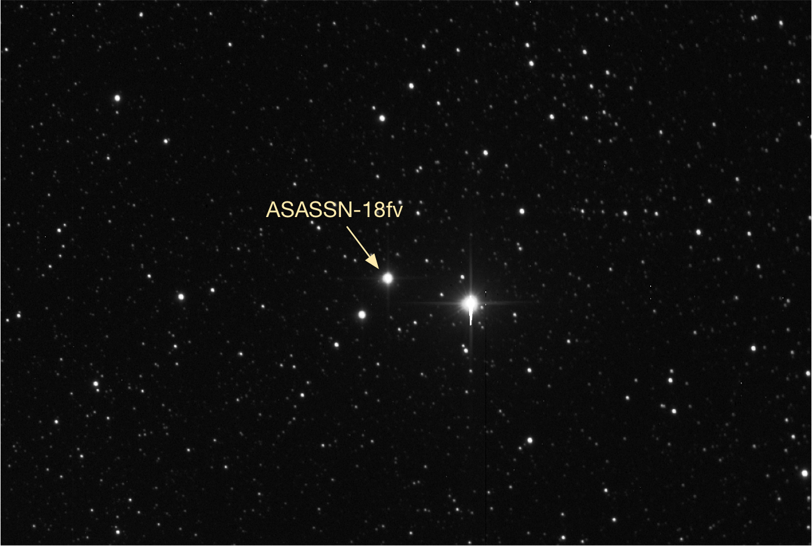
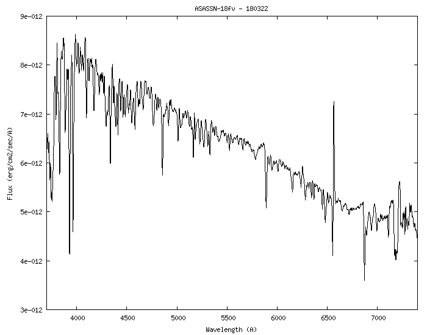
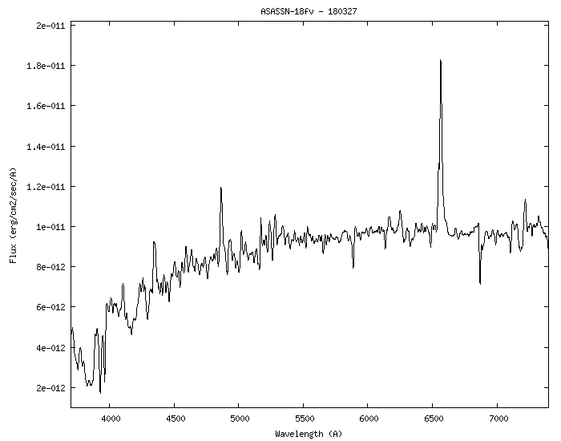
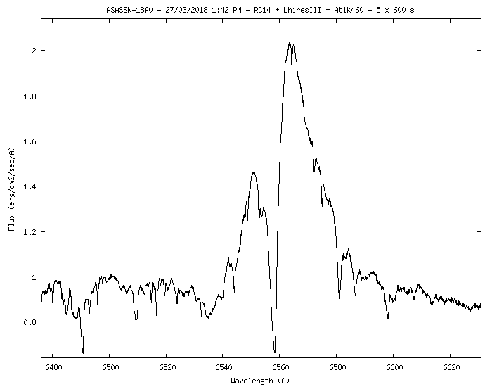

The very bright (and brightening) nova candidate in Carina confirmed as classical nova in the early evening of March 21st. Additional information can be found at ATel #11460.


BV photometry acquired on March 22nd provided magnitudes B = 7.6 and V = 6.9
A flux calibrated spectrum (also acquired on the 22nd):

Update - March 27:
Additional spectra, including a high resolution (R ~ 16,000) spectrum centred on H-alpha. Measured magnitudes B=7.4, V=6.5 from photometry taken on the same night.

